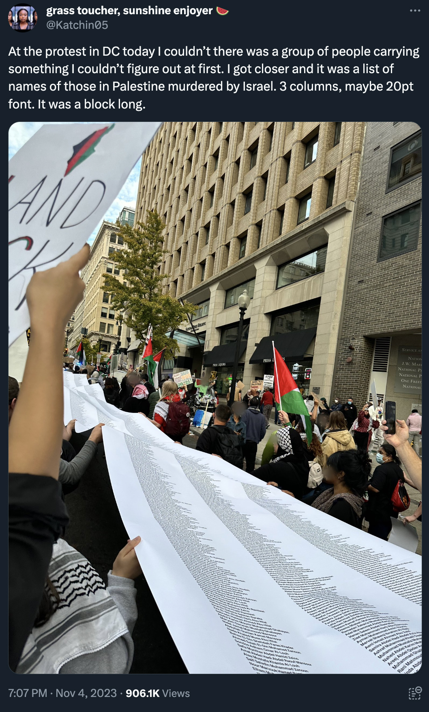
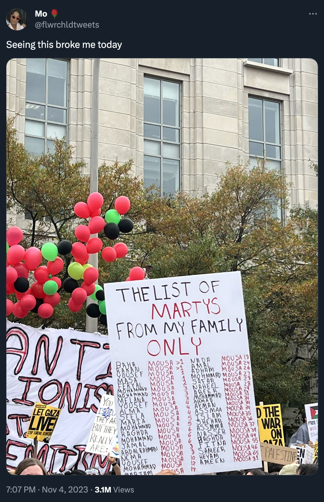
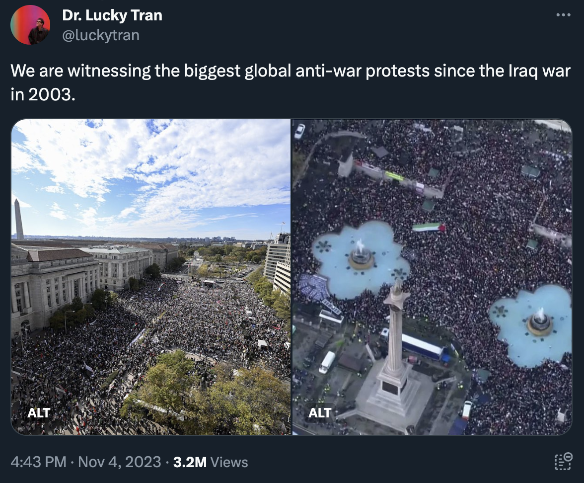
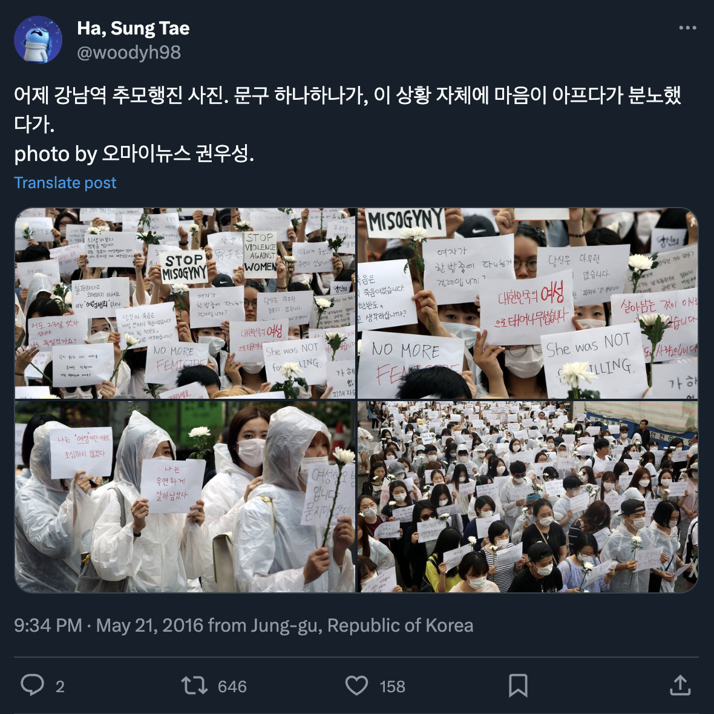
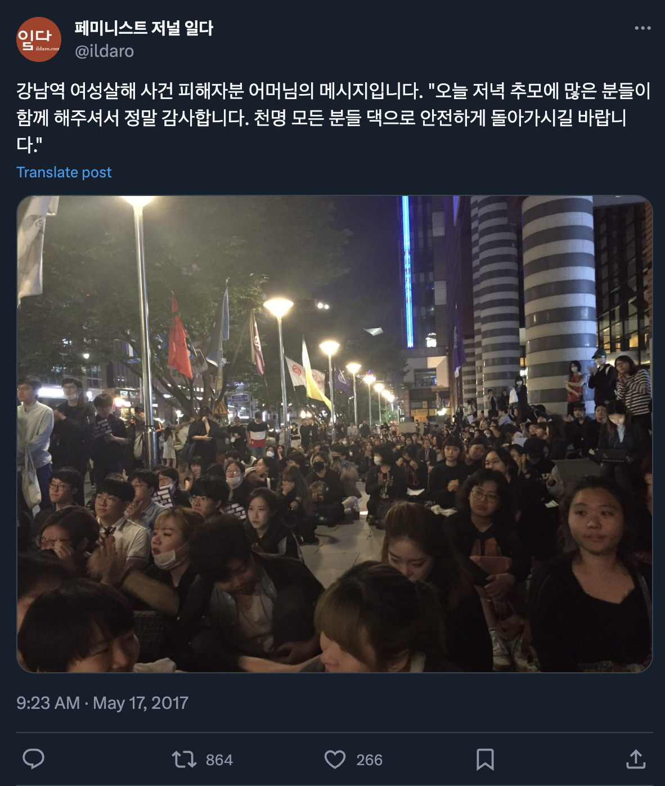
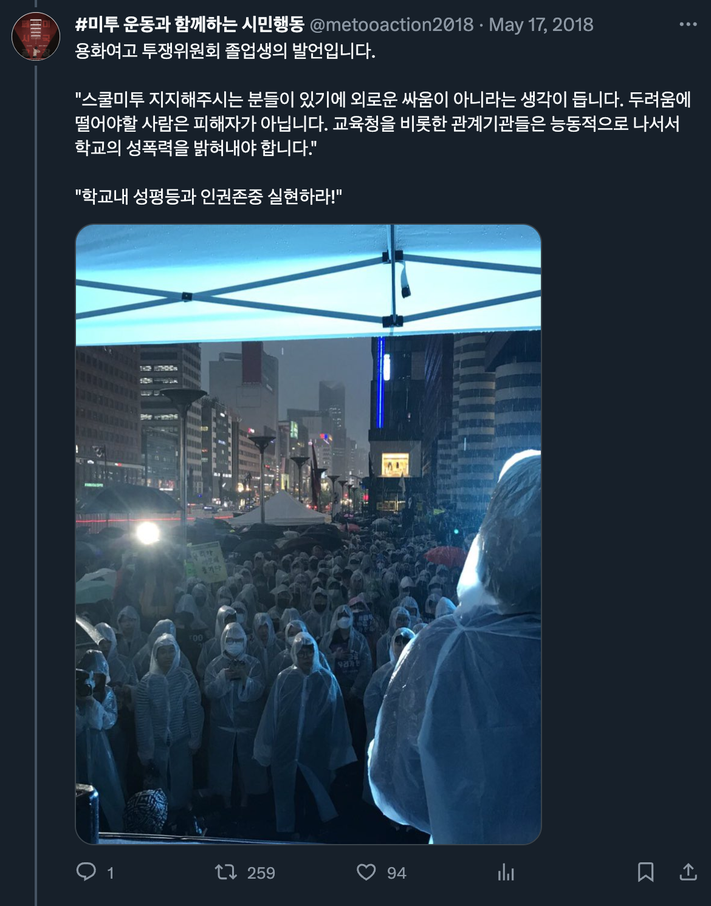
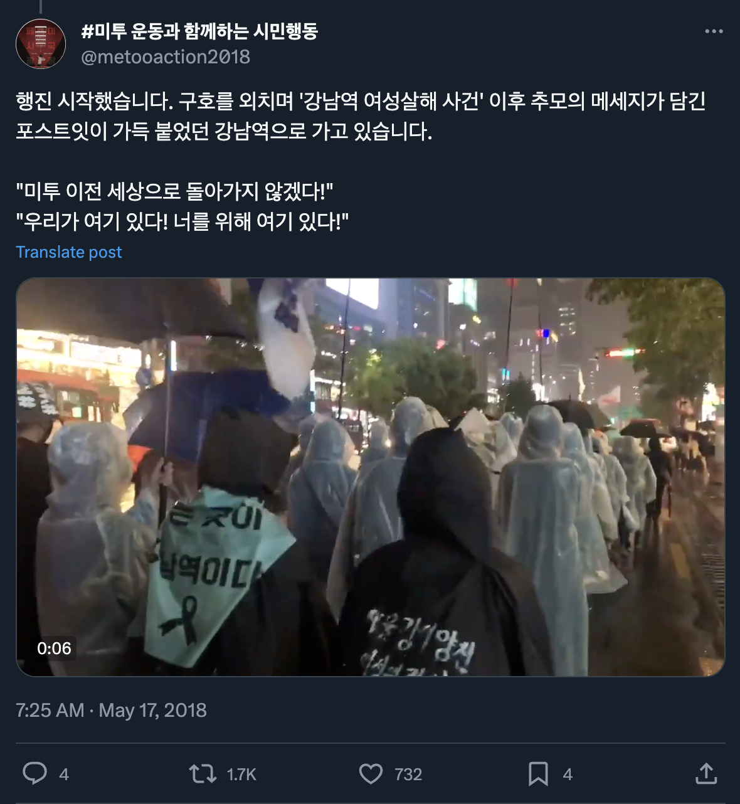
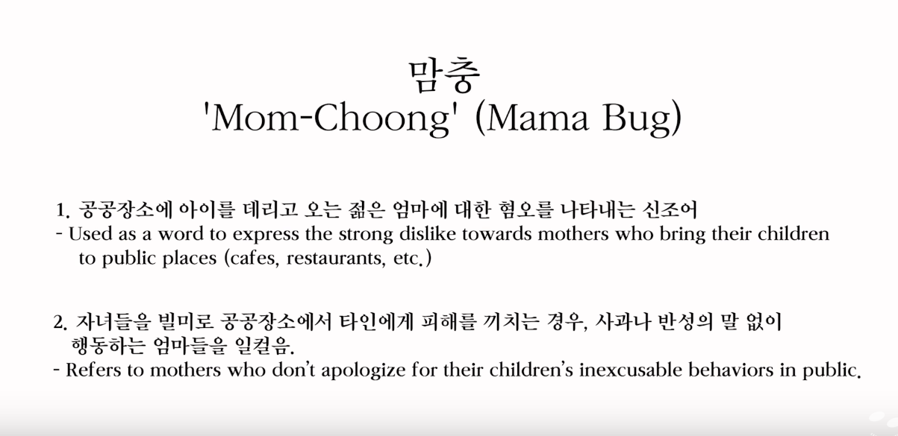

계미현은 우리의 시인이 선택한 이름이다. 공민의 시인 말이다.
계 미현은 개미 현과 발음이 비슷하다. 이것은 동음이의어로, 음성적인 말장난이다.
한국어로는 사실 뻔한 말장난인데, 나는 개미 현이 한국계 미국인 개미의 이름처럼 들린다는 점이 놀라울 따름이다.
((한국인이 친숙함(“우리” 릭남)과 거리감(에릭이나 윤도라고 부르지 않고)을 동시에 표현하기 위해 에릭남을 우리 릭남 씨라고 부르는 것과 비슷하다.))
콜로니가 깜짝 놀랄 만한 이 시집에서 계미현의 이름은 개미의 중심적 은유로 작용한다.
그렇다. “개미”는 한국어로 개미를 의미한다. 아, 이미 알고 있는 줄. 죄송합니다.
그리고 계는 미현의 성이다. 한국을 비롯한 세계 여러 나라에서는 성이 먼저 온다.
((나도 내 성을 지웠는데, 그건 내가 또 다른 Yi/Rhee/Lee의 이름을 가진 여자가 되는 것, 그리고 평론에서 우리(나와 시인)의 이름이 엉망으로 표기되는 것이 정말 싫었기 때문이다. 정말 번역을 위해서라면 안 해본 게 없다.))
그러니까 한국어 말장난, 즉 언어적, 문화적 맥락을 알아야 계미현의 시에 담긴 메시지를 해독할 수 있다.
왜 시인들은 암호를 사용하는 걸까?
그냥 의미하는 바를 말하면 될 텐데.
왜 다들 그렇게 숨기려 드는 걸까?
물론, 삼기와 엄결 때문이지!
(해독해 보시라.)
솔직히 나는 1980년대, 그러니까 그 떠들썩했던 6월 민주항쟁 이후로 이런 한국 시를 본 적이 없다.
자, 그럼 안경을 고쳐 쓰고 이 군집을 시 별로 자세히 살펴볼까.
“Ant lives with ant in the ant house and ant and ant make a lot of familiar words and laugh a lot and some will be recorded and the young ants will be given old words and read them” (“개미집에서는 개미와 개미가 같이 살고 개미와 개미는 익숙한 말을 많이 지어내고 많이 웃고 그중 일부는 기록되고 어린 개미들은 오랜 말을 받아 읽을 것이다”)
이것이 바로 계미현이 공민의 질감 있는 번역을 통해 개미집에 있는 개미와 개미와 개미 등을 소개하는 방식이다.
Antwiki.org에 의하면 “개미는 일반적으로 수컷 외에 두 개의 여성 계급(일개미, 여왕개미)을 가지고 있다. 암컷은 이배체(수정란에서 부화하여 두 쌍의 염색체를 가짐)인 반면, 수컷은 홑배수체(미수정란에서 부화하여 모체로부터 한 쌍의 염색체만 받음)다. 이 홑두배수성은 모든 벌목(Hymenoptera)의 특징이다(따라서 수컷에게는 아버지가 없다!).”
계미현은 계속해서 이렇게 말한다.
“I have to mourn for the loner ant They say they’ll die if they break away from the group alone I mumble then I forget to mourn as I kiss them again and when the time comes I fly toward the new ceiling and have sex”(“무리에서 혼자 이탈하면 죽게 된다던데 중얼거리다가 그에게 다시 키스를 하느라 애도를 깜빡하다가 때가 되면 새로운 천장으로 날아올라 섹스를 합니다”)
((백인 남초 커뮤 모쏠들이 반란군에 대해 열폭하던 때를 기억하는가?
반란군이 인종적으로 더 다양해지고 성차별도 약간 줄었다면서.
아니, 탈영을 감행한 퍼스트 오더 스톰트루퍼는, 그것도
*메모 확인*
‘은하 제국’에서 도망칠 만한 인물은
젊고 재능이 있는
흑인! 핀
(군번 FN-2187)이
제국으로부터 도망친 건 너무 당연한 거 아니야?))
다시 개미로 돌아가서:
이 시는 식민주의처럼 나를 쫓아오며 괴롭힌다.
만약 계미현이 남몰래 현 씨 성을 가졌다면, 현 가는 개미임에 틀림없다.
현(泫)은 ‘흐느끼다, 울다, 빛나다, 반짝이다’라는 뜻을 가진 글자다.
이 시에서 개미들은 ‘과로’와 ‘건설 현장서 추락’으로 죽는다.
그들은 ‘살충제 중독’과 ‘해충 박멸 업체의 대학살’로 죽임을 당한다.
나는 이스라엘과 미국, 그리고 현대 제국의 다른 주체들이 팔레스타인, 콩고, 그리고 수단 원주민에 대해 대량 학살을 자행하고 있는, 마감일이 며칠 지난 오늘 이 리뷰를 쓰고 있다.
(이렇게 계속하는 것이
얼마나 쉽고 편리할까?)
팔레스타인의 어린이들, 그러니까 우리가 같은 인간으로서 무고하고 폭력으로부터 보호되어야 한다고 믿어 의심치 않는 자들의 목록은 내가 글을 쓰고 당신이 이 글을 읽는 동안에도 계속 늘고 있다.
이름과 나이, 사망 원인 하나하나가
이스라엘 점령군에 의해 살해된 팔레스타인 어린이들의 무한 스크롤을 떠오르게 한다.



그러나 물론 한반도에도 제주도에서 광주에 이르기까지 미국 제국이 그들의 꼭두각시와 똘마니를 동원하여 실시한 학살의 역사가 있다.
침묵당하고 지워지기를 반복한 학살도 존재한다.
여자공용화장실부터 라커룸, 모텔까지
대한민국 전역에서
국가에서 식별하고, 성문화하고, 허가한 성별에 상관 없이
인간이 사용한 곳에서 자행된 학살이.




“Hyun Kyunghee, Gone Missing Just Before Being Crowned as Queen — Still Missing After 10 Years” (“현경희, 여왕 즉위에 오르기 직전 행방불명… 10년째 찾지 못해”)라는 시구를 통해 앞의 시에서 처음 등장한 경희가 여기서 다시 등장한다.
“home is a sea of water again / because kyunghee was crying all night you take out every towel at home and spread them on the floor ... and kyunghee starts tearing home down perhaps with the strength gained from eating home.” (“또 집이 물바다가 되어 버렸다//경희가 밤새 운 탓이다 너는 아침부터 집에 있는 모든 수건을 꺼내어 바닥에 깔아 둔다 ... 경희가 집을 부숴 나간다 밥을 먹고 기운을 차린 탓일까”)
공민의 눈부신 동사 선택을 통해 경희가 울고(tear) 부수는(tear) 행위가 이중으로 작용한다.
언제쯤 이런 얘기를 그만 할 수 있을까
한국어와 영어가
얼마나 다른지에 대한 이 케케묵은 이야기를? 원고가 워낙 다르다 보니
시의 형태도 변하기 마련이다.
공민의 영어 번역에서는 시가 훨씬 길지만, 형태가 달라졌다고 해서 의미가 사라지지는 않는다.
그것 참 재밌지 않은가!
공민은 계미현의 시를 다음과 같이 번역한다.
“Seonrin is a critic. Strike that. Critic wannabe. Hasn't debuted yet. Maybe on purpose? Seonrin only critiques work by authors that haven't debuted yet. That's just projecting one’s insecurities. Is what I want to say. But I don't.” (“선린은 비평가임. 아니 취소. 비평가 지망생임. 아직 등단을 못함. 아니 안함? 선린은 등단하지 않은 작가들 작품만 비평함. 그건 콤플렉스를 드러내는 방식일 뿐. 이라고 말하고 싶음. 하지는 않음.”)
나는 한국 문학계의 맥락을 설명하기 위해 정말 많은 시도를 했다.
뉴욕에서 정보라와 대화를 나누던 어느 시점에 안톤 허는 한국 문학계를 다음과 같이 번역하기에 이른다: “A Licensing System” (면허 제도).
무엇에 대한 면허냐고?
물론 글 쓰는 거지, 이 바보야!
한국 잡지사와 언론사는 문학계의 프로듀스 101에 참여하는 작가들에게 신작을 의뢰한다.
(픽미! 픽미! 픽미업!)
일반적으로 석사(MFA)와 대도시(NYC) 사이에 갇힌 영어권 작가들은 잔돈과 젊음이 바닥날 때까지 투고 복권을 긁거나 이상한 작은 잡지를 만드는 데 비해 말이다.
계미현은
시를 쓰기 위한 면허가 없고
공민한테 번역을 부탁했으며,
김선오에게 리뷰를 부탁했고,
나에게 공민의 번역을 리뷰해달라고 하여
이를 웹사이트를 통해 선보인다.
무면허 시인—
이게 펑크지.
나도 제법 구상시나 시각적인 시를 번역한 경력이 있다. (미국 오픈레터북스에서 펴낸 이소호의 『캣콜링』
이 그중 하나고, 가장 최근에는 아이오와 작가 워크숍의 IWP 가을 레지던시를 위해 번역한 『모래비가 내리는 모래 서점』에 있는 문보영의 낙서들😶🌫️ 이 있다.)
하지만 과연 이상과 최재원 이후로 이정도의 수학적 접근을 본 적이 있을까?
(번역가를 언급하고야 마는
번역가의 방식이 참 재밌지 않은가?)
다시 개미로 돌아가서.
벌레 대 코딱지 대
곤충 대 해충 대
바퀴?

백인의 미국은 유색 인종의 여성 혐오에 대해 이야기하기를 좋아하기에 너무나도 자연스럽게 뉴욕 타임즈와 인터뷰를 하게 된 적이 있다.
『82년생 김지영』을 말하기 위해 말이다.
때는 2020년이였고
아시다시피 “다이나믹 코리아”라나 뭐라나.
전부 진절머리 나, 진짜.
매번 똑같은 터무니없는 질문은
제발 그만해!!!
나는 하고싶은
더 흥미로운 말이 많단 말이야!
소설은 문제 없어. 나는 해야 할(혹은 사실 하고 싶었던) 일을 했을 뿐이야.
거기에 추가적으로
담론에 불을 지피기도 했지만.
놀이공원 속
거울의 방에 비친 현대
한국 중산층
이성애자 여성 그리고 그들의
공유가 영화에서 연기하기에 알맞은
남편에 대한 담론을.
모든 거울상이 진실을 보여주는 건 아니야
절대 진리인
거울상은 없으니까.
(게다가 출판사는
블록버스터 흥행 수입에도 불구하고
번역가를 착취하고.) 하지만 장해니(Jamie Chang)는 순간
“mom-roach”(‘엄마충’)을 통해
그레고즈 잠자를 불러일으켰고
“cockroach” (‘바퀴벌레’) 라는 단어는 또 얼마나 웃겨. 게다가
한 영상에 대한 비출산 옹호 반응은 얼마나 뜨거웠는지.
이제는 트롤링(이라 쓰고 괴롭힘이라 읽는)에 의해 비공개로 전환된 그 영상에서.
아무튼 내가 작품에 대해 어떻게 생각하든 간에 『82년생 김지영』은 의심할 여지 없이 문학적이고 대중적인 센세이션을 불러일으켰다. 대구의 딸이자 많은 이들에겐 눈에 넣어도 아프지 않던 레드벨벳의 아이린이 죄를 인정하자 남자들은 아이린의 사진을 잘라 불태웠다. 아이린의 죄목은 바로... 베스트셀러 소설을 읽었다는 것이었다.
장해니의 영어 번역본 서문에는 방탄소년단의 RM(팬이니까 제발 테러하지 마라)의 말이 인용되어 있다.
뭔가 정말
이상하지 않아?
여성, 특히 어머니들에게 이성애적으로 번식하도록
구걸하고,
강요하고,
요구하는 국가에서 여성혐오주의자들이 그들을 이토록 폭력적으로 비인간화 하는 것이?
여성혐오주의자들은 여성을 억압함으로써 다시 재생산적 미래주의(reproductive futurism)를 받아들일 수 있게 만들 것이라 믿는다
백인이 아닌 외국인,
퀴어,
장애인,
성노동자 등을
한국 사회의 구조 속으로 편입시키기를 거부한 채로.
그래서 한국 여성들은 다 해외로 이주하고 있지.
이곳을 벗어나기 위해. 바로 헬
조선. 개미지옥에서.
덧붙일 말이 없네.
번역이 기술이라면 시도 마찬가지다.
드디어 계미현 등장!
부디 우리 개미들이
한계를 넘어서고
주제를 벗어나고
경로를 이탈하고
방향을 우회하고
권력에 대항하며
콜로니에서 일탈하기를.
Gye Mihyun is the chosen name of our poet. Gongmin’s poet.
Gye Mihyun (계 미현) sounds like Gaemi Hyun (개미 현). A homonym. A sonic pun.
The pun is obvious in Korean, and I marvel at how much Gaemi Hyun sounds like a Korean American ant.
((Kind of like how Korean Koreans call Eric Nam 우리 릭남 씨 to express familiarity (“our” Ricnam) and distance (why not just call him Eric or Yundo?) at once.))
Gye Mihyun’s name activates the central metaphor of ants in this colony-shattering collection.
Right—gaemi means “ant” in Korean. Sorry, I thought you already knew.
And Gye is Mihyun’s surname. Family name comes first in Korea and many other countries around the world.
((I dropped my surname, too, because I used to be just another Yi/Rhee/Lee girly, and hated how often our names (mine and my poets’) got butchered in reviews. The lengths I go for translation!))
Knowledge of Korean wordplay, that is, linguistic and cultural contexts, can decode the messages encoded in Gye Mihyun’s poetry.
Why do poets encode
Instead of just saying what they mean?
Why does anyone ever hide anything?
ALLUSIVE CREN and CONSPIRE SH, of course!
(Unscramble me.)
Seriously, I haven’t seen Korean poetry like this since the 1980s, since the revelrous resistance of the June Democratic Struggle.
I’m wearing my prescription-strength glasses. Let’s take a closer look at this colony, poem by poem:
But of course the Korean Peninsula has its own history of massacres, from Jeju Island to the city of Gwangju, executed by the American Empire with all its puppets and toadies.
There’s also a massacre, repeatedly silenced and erased
From women’s public bathrooms, locker rooms, and motels
All over the Republic of Korea
Used by human beings regardless of
Sex as identified, codified, and licensed by the state.
kyunghee, identified in the previous poem as “Hyun Kyunghee, Gone Missing Just Before Being Crowned as Queen — Still Missing After 10 Years,” reappears here:
“home is a sea of water again / because kyunghee was crying all night you take out every towel at home and spread them on the floor . . . and kyunghee starts tearing home down perhaps with the strength gained from eating”
Gongmin’s brilliant verb choice works double-time as kyunghee tears (cries) and tears (destructs).
When can I stop repeating
How different the Korean and English
Languages are? With such different scripts,
The shape of the poem changes.
The poem is much longer in Gongmin’s English translation, but its changed shape does not take away from its meaning.
Would you look at that!
Gongmin translates Gye Mihyun:
“Seonrin is a critic. Strike that. Critic wannabe. Hasn't debuted yet. Maybe on purpose? Seonrin only critiques work by authors that haven't debuted yet. That's just projecting one’s insecurities. Is what I want to say. But I don't.”
Over and over again I have attempted to contextualize the South Korean literary establishment.
At some point during his talk with Bora Chung in New York City, Anton Hur puts forth a new translation: a licensing system.
License to what?
To write, silly!
South Korean magazines and presses commission new work from writers who participate in the literary equivalent of Produce 101
(Pick Me! Pick Me! Pick Me Up!)
Whereas Anglophone writers caught between MFA-vs-NYC generally play the Submittable lottery or make weird little zines until they run out of pocket change and youth.
Gye Mihyun is unlicensed
To write poetry and
Got Gongmin to translate her,
Kim Sono to review her,
And me to review Gongmin’s translation
To display online for a month.
An unlicensed poet—
Now that’s punk.
I have translated my share of concrete or otherwise visual poetry (Lee Soho’s Catcalling
For Open Letter Books, for one, and more recently, Moon Bo Young’s doodles in The bookstore in the pouring sand for her IWP Fall Residency at the Iowa Writers’ Workshop 😶🌫️)
But have I seen such a mathematical approach since Yi Sang and Jaewon Che?
(Don’t you love how translators
Name translators?)
Back to ants.
Bug versus booger versus
Insect versus pest versus
Roach?
Because white America loves to examine misogynies of color, naturally I was interviewed by the New York Times
To talk about Kim Ji-young, Born 1982
Back in 2020
And you know, Dynamic Korea and all
And I’m just like, over it, okay?
Stop asking me the same
Wrong questions!!!
I have other
More interesting things to say!
The novel is fine. It did what it needed (or really, wanted) to do
And then some
In inciting public discourse
Around some fun house
Mirror reflection of contemporary
South Korean middle-class
Cishet womanhood with a husband
Playable by Gong Yoo in the movie
Adaptation.
Not every reflection is true
Because no reflection is
The absolute truth.
(Plus, the publisher exploits
Translators despite their blockbuster
Money.) But Jamie Chang kinda snapped
With “mom-roach” in giving
Gregor Samsa and also how funny is cock-
Roach as a word? But you could not imagine
The anti-children reactions to a video that has since been made private due to
Trolling, that is harassment.)
Regardless of my feelings, KJ82 was undeniably a literary and pop sensation: men cut up and burned photos of Irene of Red Velvet—an eldest daughter from Daegu of all places, the apple of so many eyes—after she admitted to the punishable crime of . . . reading a bestselling novel?
While RM of BTS (I actually love him, don’t even think about coming for me) is quoted in the foreword of Jamie Chang’s English translation.
Like, isn’t that just a little
Perverse—
Misogynists violently dehumanizing women, specifically mothers, in a country that is
Begging,
Coercing,
Forcing them to reproduce heterosexually?
Misogynists believe they can oppress women back into repro-futurity
Without accepting
Non-white foreigners,
Queers,
Disabled people,
Sex workers et al
Into the fabric of South Korean society.
And that’s why Korean women are all moving abroad,
Getting the fuck out of Hell
Joseon. 개미지옥.
Enough said.
If translation is a technology, so is poetry.
Here comes Gye Mihyun at last!
May we ants
Transgress and
Digress and
Diverge and
Divert and
Divest further
Away from the colony.